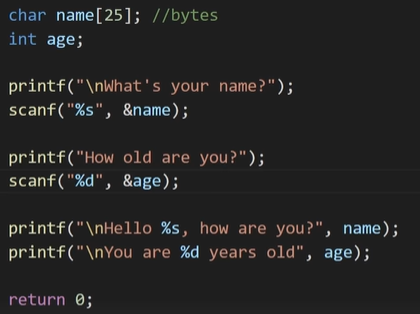

C¶
Notas sobre a linguagem C usada na disciplina de Algoritmos e Estruturas de Dados. Referências:
- GeeksforGeeks — C Programming Language
- W3Schools — C
- TutorialsPoint — C Programming
- Vídeo — Bro Code, C tutorial
- DevDocs — C
- cppreference — goto
- Norma C11 (N1570)
- upGrad — Estrutura de um programa C
Tipos de dados e format specifiers¶
C oferece vários tipos numéricos além do int e float básicos: short, long, double, e os modificadores unsigned (sem sinal) e signed (com sinal, o padrão). A escolha do tipo afeta tanto o intervalo de valores representáveis quanto o espaço de memória ocupado.
scanf e printf¶
Em scanf, é preciso passar o endereço da variável (por isso o &var), já que a função escreve diretamente na memória apontada. Em printf, usamos format specifiers: % seguido de uma letra (%d para inteiro, %f para float, %s para string, etc.).
scanf não lê espaços em branco
scanf("%s", ...) para strings interrompe a leitura no primeiro espaço — não é adequado para ler frases completas. Quando a entrada precisa conter espaços, use fgets() no lugar.
Usar fgets() tem uma pegadinha: ela inclui o caractere de nova linha (\n) no final da string lida. Para removê-lo, incluímos <string.h> e fazemos:
scanf vs. fgets
Imagem de referência

Com a entrada Bro Code para o nome, o scanf da idade não é lido corretamente se não tratarmos a quebra de linha.
Imagens de referência


Sem o fgets(), o programa não funcionaria corretamente: o scanf da idade acabaria lendo o espaço em branco deixado e retornaria 0 para a idade.
Imagens de referência


Tabela de tipos e specifiers¶
| Tipo | Exemplo | Tamanho | Intervalo | Format specifier |
|---|---|---|---|---|
char |
char a = 'C'; |
1 byte | caractere único | %c |
char[] |
char b[] = "Bro"; |
— | array de caracteres (string) | %s |
char |
char f = 120; |
1 byte | -128 a +127 | %d ou %c |
unsigned char |
unsigned char g = 255; |
1 byte | 0 a +255 | %d ou %c |
short int |
short int h = 32767; |
2 bytes | -32.768 a +32.767 | %d |
unsigned short int |
unsigned short int i = 65535; |
2 bytes | 0 a +65.535 | %d |
int |
int j = 2147483647; |
4 bytes | -2.147.483.648 a +2.147.483.647 | %d |
unsigned int |
unsigned int k = 4294967295; |
4 bytes | 0 a +4.294.967.295 | %u |
long long int |
long long int l = 987654234567899765; |
8 bytes | -9 a +9 quintilhões | %lld |
unsigned long long int |
unsigned long long int m = 12345678902345; |
8 bytes | 0 a +18 quintilhões | %llu |
float |
float c = 3.141592; |
4 bytes (32 bits de precisão) | 6-7 dígitos | %f |
double |
double d = 3.141592653589793; |
8 bytes (64 bits de precisão) | 15-16 dígitos | %lf |
Imagem de referência (screenshots de código)


Note
long doubleusa%llf.- Existe também
%zu, usado para o tiposize_t(ainda a pesquisar em mais detalhes).
Imagens de referência


Usar %.1f (ou qualquer número de casas decimais) arredonda a parte decimal exibida — não muda o valor armazenado, só a formatação da saída.
Example
Imagem de referência

const¶
O qualificador const torna uma variável imutável depois de inicializada. Por convenção (boa prática), variáveis const são nomeadas em MAIÚSCULAS:
Operadores¶
Operadores aritméticos: + (adição), - (subtração), * (multiplicação), / (divisão), % (módulo), ++ (incremento), -- (decremento).
Imagem de referência (screenshot de código)

Operadores de atribuição composta (augmented assignment): x = x + 2 equivale a x += 2; x = x - 3 equivale a x -= 3; x = x * 4 equivale a x *= 4; x = x / 5 equivale a x /= 5; x = x % 2 equivale a x %= 2.
Imagem de referência (screenshots de código)


Divisão entre inteiros
A divisão entre dois int sempre retorna um int — se a divisão não for exata, a parte decimal é descartada (não arredondada). Para obter o resultado com parte decimal, pelo menos um dos operandos precisa ser float ou double.
Example
Imagem de referência

Saída: 2
Imagem de referência

Saída: 2.000000
float a = 5, b = 2;
// a divisão usa pelo menos um float, então o resultado preserva a parte decimal
printf("%f\n", a / b); // 2.500000 (para outros valores de a e b)
Imagem de referência

Saída: 2.500000
Funções matemáticas¶
Disponíveis incluindo <math.h>.
double A = sqrt(9);
double B = pow(2, 4);
int C = round(3.14);
int D = ceil(3.14);
int E = floor(3.99);
double F = fabs(-100);
double G = log(3);
double H = sin(45);
double I = cos(45);
double J = tan(45);
Imagem de referência (screenshot de código)

Condicionais¶
if, else if, else funcionam como em outras linguagens C-like.
Switch¶
Alternativa mais eficiente a uma longa cadeia de else if, quando queremos testar um único valor contra vários casos possíveis (igualdade exata).
Imagens de referência


Operadores lógicos¶
&&(AND) — checa se duas ou mais variáveis são verdadeiras.||(OR) — checa se pelo menos uma variável é verdadeira.!(NOT) — inverte o valor de uma condição booleana.
Imagem de referência (screenshot de código)

Funções¶
Uma função é um bloco de código nomeado, executado quando é chamado em algum ponto do programa (com exceção de main(), que é chamada automaticamente ao iniciar o programa).
- Uma função pode retornar um valor usando
return— inclusive pode retornar o resultado de uma chamada a ela mesma, formando recursão. - Se a função não retorna nenhum valor, seu tipo de retorno é
void. - O tipo de retorno é declarado antes do nome da função.
Example
Imagens de referência


Uma função pode ter múltiplos returns: a execução para no primeiro return alcançado (exceto em chamadas recursivas, onde a mesma função é lida novamente a cada chamada).
Parâmetros e argumentos:
Imagem de referência

Variáveis declaradas dentro de uma função só existem (têm escopo) dentro dela, a menos que sejam retornadas. Para tornar um valor acessível dentro de uma função sem declará-lo nela, basta passá-lo como parâmetro.
Operador ternário¶
Imagem de referência

Sem usar o operador ternário
Imagens de referência


Usando o operador ternário
Imagens de referência

Function prototype¶
Usado quando uma função é definida depois de main no código — o compilador precisa conhecer a assinatura da função antes de encontrar sua chamada, então declaramos o prototype (assinatura, sem corpo) antes de main.
Imagens de referência


Example
Imagens de referência


Funções de string¶
strlwr(string1); // converte a string para minúsculas
strupr(string1); // converte a string para maiúsculas
strcat(string1, string2); // concatena string2 ao final de string1
strncat(string1, string2, 1);// concatena n caracteres de string2 ao final de string1
strcpy(string1, string2); // copia string2 em string1
strncpy(string1, string2, 2);// copia n caracteres de string2 em string1
strset(string1, '?'); // atribui um caractere a todos os caracteres da string
strnset(string1, 'x', 1); // atribui um caractere aos n primeiros caracteres da string
strrev(string1); // inverte a string
int result = strlen(string1); // retorna o tamanho da string (int)
int result = strcmp(string1, string2); // compara todos os caracteres das duas strings
int result = strncmp(string1, string2, 1); // compara n caracteres
int result = strcmpi(string1, string1); // compara tudo, ignorando maiúsc./minúsc.
int result = strnicmp(string1, string1, 1); // compara n caracteres, ignorando maiúsc./minúsc.
Imagem de referência (screenshots de código)


Note
As funções de comparação de string (como strcmp, abaixo de strlen na tabela) retornam 0 quando as strings são iguais, e um inteiro diferente de zero caso contrário.
if (result == 0) {
printf("These strings are the same");
} else {
printf("These strings are not the same");
}
Imagem de referência (screenshot de código)

Loops¶
For¶
Imagem de referência

Example
Imagem de referência

While¶
Imagem de referência

Example
Imagem de referência

Do-while¶
Imagens de referência


Example
Imagem de referência

Loops aninhados (nested loops)¶
Imagem de referência

Example
Imagem de referência

Break e continue¶
Imagem de referência

Arrays¶
Imagem de referência

Example
Imagem de referência

Iterando sobre uma array¶
Para iterar sobre uma array, usamos um for:
Imagem de referência

sizeof() retorna o tamanho de um operando em bytes. Por isso, para obter o número de elementos de uma array estática, dividimos sizeof(array) por sizeof(array[0]) (por exemplo, se sizeof(prices) = 48 e sizeof(prices[i]) = 8, a array tem 48 / 8 = 6 elementos) — o equivalente ao len() do Python, só que calculado manualmente.
Arrays 2D¶
Imagem de referência

Declarando a array:
Imagem de referência

Example
Imagem de referência

Usando sizeof para calcular a quantidade de iterações dos fors — mas se lermos o número de linhas e colunas via scanf antes, podemos declarar a array já com o tamanho correto, sem precisar desse cálculo.
Tip
Para alterar um item em uma array de strings, use strcpy.
Swap¶
Swap troca os valores de duas variáveis. Pode ser feito com uma função auxiliar ou com uma variável temporária — a segunda abordagem é geralmente preferida ao ordenar arrays (ver os algoritmos de ordenação na página principal da disciplina).
Sorts¶
Os algoritmos de ordenação (Selection sort, Bubble sort, Insertion sort, Merge sort, Quick sort, etc.) são tratados em detalhe na página principal da disciplina: veja Algoritmos e Estruturas de Dados.
Struct e typedef¶
Struct¶
Uma struct agrupa variáveis de tipos diferentes sob um único nome.
Imagem de referência

Example
Imagem de referência

Typedef¶
Imagem de referência

Usando typedef sem struct:
Imagem de referência

Usando typedef com struct:
Imagem de referência

Usando typedef junto com struct, não precisamos mais escrever a palavra struct toda vez que declararmos uma variável desse tipo.
Array de structs¶
Para agrupar várias instâncias de uma struct, podemos criar uma array de structs.
Example
Imagem de referência

Poderíamos usar typedef para eliminar a necessidade de escrever struct repetidamente dentro de main.
Enum¶
Imagens de referência


Valores de enum são tratados como constantes inteiras.
Example
Imagem de referência

Não é necessário atribuir números explicitamente: Sun recebe implicitamente o valor 0, Mon recebe 1, e assim por diante. Porém, se atribuirmos valores explicitamente a todas as constantes, elas serão tratadas simplesmente como int.
Imagens de referência


Esta última versão é mais legível.
Números (pseudo-)aleatórios¶
Imagens de referência


Precisamos dessas duas bibliotecas (<stdlib.h> para rand()/srand() e <time.h> para time()).
Rolando um dado
Imagem de referência

O srand(time(0)) é necessário para definir a seed (semente) do gerador de números pseudo-aleatórios. Sem essa chamada, toda vez que executássemos o programa obteríamos a mesma sequência de números (não necessariamente todos iguais entre si na mesma execução, mas a mesma sequência se repetindo entre execuções diferentes).
Operadores bitwise¶
Operadores especiais usados em programação a nível de bits (é importante saber binário para este tópico):
&= AND|= OR^= XOR<<= left shift (deslocamento à esquerda)>>= right shift (deslocamento à direita)
Imagem de referência (screenshots de código)


Existe também o operador de complemento (~), um pouco mais complexo de interpretar na prática.
Example
Imagem de referência

Endereços de memória¶
Imagens de referência


Ao declarar uma variável, o programa reserva um bloco de memória para guardar aquele valor, e essa variável passa a ter um endereço de memória específico (se mudarmos o tipo da mesma variável, o endereço pode mudar). sizeof mostra a quantidade de memória ocupada por uma variável de determinado tipo.
Imagem de referência

Usando o format specifier %p, imprimimos o endereço de uma variável (p de pointer, o próximo tópico).
O que é impresso
Imagem de referência

Cada caractere do endereço impresso (notação hexadecimal) pode ser um número de 0 a 9 ou uma letra de A a F.
Pointers (ponteiros)¶
Imagens de referência


Example
Imagem de referência

Ponteiros como argumento de função¶
Basta colocar um * antes do parâmetro para indicar que a função recebe um ponteiro.
Imagem de referência

Boas práticas com ponteiros¶
É uma boa prática declarar um ponteiro já atribuindo NULL a ele, até que receba um endereço válido.
Example
Imagem de referência

Também é boa prática checar primeiro se o ponteiro é NULL, e usar um else para conter o restante do código que depende dele estar válido.
Manipulação de arquivos (file handling)¶
Funções¶
fopen()
Imagem de referência

fclose()
Imagem de referência

fprintf()
Imagem de referência

fscanf() — lê um conjunto de dados de um arquivo.
fgets() — lê strings de dentro de um arquivo.
Parâmetros:
char *str— ponteiro que guarda a string (array dechar) da linha atual do arquivo.int size— número máximo de caracteres a serem lidos.FILE *fp— ponteiro que guarda as informações do arquivo aberto em modo de leitura.
Imagem de referência

Example
Imagem de referência

Dentro de um while, fgets lê todas as linhas de file.txt; usado fora do while, lê apenas a primeira linha.
fgets retorna a string lida se tudo correr bem, ou NULL em caso de erro (ou fim do arquivo). Ao ser chamada, a função escreve a string lida no endereço apontado por char *str.
Note
Existem outras funções de manipulação de arquivo além das listadas aqui.
Criando/escrevendo um arquivo¶
Imagem de referência

Se não especificarmos a localização do arquivo, ele é criado no diretório/pasta atual. Podemos especificar o local desejado:
Example
Imagem de referência

Tip
Checar se pF (o ponteiro de arquivo) é NULL antes de usá-lo é boa prática: se houver erro na criação do arquivo, o programa pode imprimir uma mensagem e retornar, em vez de travar.
Deletando um arquivo¶
Imagem de referência

Executando esse código a primeira vez, o arquivo criado na seção anterior é deletado; executando de novo, o programa imprime "That file was NOT deleted!" (já que o arquivo não existe mais).
Lendo arquivos¶
Example
Imagem de referência

Essa versão lê e imprime apenas a primeira linha de file.txt.
Imagem de referência

Essa versão lê e imprime todas as linhas de file.txt.
Alocação de memória¶
Estática¶
A memória estática é reservada para as variáveis antes do programa começar a executar — por isso também é chamada de alocação em compile time.
Se declararmos int array[20], o C reserva espaço para os 20 elementos de uma vez. Se não usarmos todos esses espaços, ficamos com memória reservada desnecessariamente; é nesse cenário que a alocação dinâmica se torna útil. Da mesma forma, podemos declarar essa variável e nunca usá-la ao longo do código, desperdiçando ainda mais memória.
Dinâmica¶
A memória dinâmica é alocada depois que o programa já está em execução — por isso também é chamada de alocação em runtime. O conteúdo inicial da memória alocada por malloc é imprevisível (não é zerado automaticamente).
Diferente da memória estática, com a memória dinâmica temos controle total sobre quanto de memória o programa está usando em cada momento. Memória dinâmica não "pertence" a uma variável — só pode ser acessada através de ponteiros. Usamos ponteiros sem declarar uma variável "dona" do valor (na alocação estática, primeiro declaramos a variável, como int a;, e depois um ponteiro que aponta para seu endereço, como int *pA = NULL; pA = &a;).
Note
Nem toda linguagem exige alocação dinâmica manual — algumas já vêm com gerenciamento automático de memória. C não é uma delas.
malloc¶
"Memory allocation". Aloca dinamicamente um único bloco contíguo de memória, do tamanho especificado.
- Retorna um ponteiro
void*, que pode ser convertido (cast) para qualquer tipo de ponteiro. - Não inicializa a memória — cada bloco começa com um valor de "lixo" (garbage value) padrão.
- Recebe apenas um parâmetro: o tamanho em bytes a alocar.
#include <stdlib.h>
int *p;
p = malloc(sizeof(int));
// no parâmetro de malloc, podemos multiplicar, dividir, etc.
Imagem de referência

Basicamente, em vez de um ponteiro receber o endereço de uma variável já existente, usamos malloc para reservar e atribuir o endereço diretamente a ele — sem a necessidade de criar antes uma variável como int a; int *p = NULL; p = &a;.
calloc¶
"Contiguous allocation". Tem a mesma funcionalidade de malloc, com duas diferenças: recebe dois parâmetros, e o valor "lixo" padrão é zerado — o que o torna ligeiramente menos eficiente que malloc.
Parâmetros: a quantidade de itens a alocar e o tamanho de cada item em bytes.
#include <stdlib.h>
int *ptr1;
ptr1 = (int*) calloc(1, sizeof(*ptr1));
// usar sizeof(*ptr1) é o mesmo que sizeof(int)
/* se fizéssemos sizeof(ptr1), mediríamos o tamanho do próprio
ponteiro, que costuma ser 8 bytes */
malloc vs. calloc:
Example
Imagens de referência


free¶
"De-allocation". Libera a memória de um ponteiro previamente alocado com malloc ou calloc. Recebe apenas um parâmetro: o ponteiro a liberar.
Boas práticas
- Toda vez que usarmos
mallocoucalloc, é boa prática chamarfreeao final do programa. - Esquecer de liberar a memória prejudica a performance do programa enquanto ele roda (mesmo que o sistema operacional libere tudo quando o programa termina). Memória alocada e nunca liberada é chamada de memory leak (vazamento de memória).
- É boa prática atribuir
NULLao ponteiro depois de chamarfree, para evitar usá-lo acidentalmente depois (um ponteiro "pendurado", ou dangling pointer).
#include <stdio.h>
#include <stdlib.h>
int main() {
// Este ponteiro guardará o endereço base do bloco criado
int *ptr, *ptr1;
int n, i;
// Número de elementos da array
n = 5;
printf("Enter number of elements: %d\n", n);
// Alocação dinâmica usando malloc()
ptr = (int*)malloc(n * sizeof(int));
// Alocação dinâmica usando calloc()
ptr1 = (int*)calloc(n, sizeof(int));
// Checa se a memória foi alocada com sucesso
if (ptr == NULL || ptr1 == NULL) {
printf("Memory not allocated.\n");
exit(0);
}
else {
printf("Memory successfully allocated using malloc.\n");
// Libera a memória
free(ptr);
ptr = NULL;
printf("Malloc Memory successfully freed.\n");
printf("\nMemory successfully allocated using calloc.\n");
// Libera a memória
free(ptr1);
ptr1 = NULL;
printf("Calloc Memory successfully freed.\n");
}
return 0;
}
realloc¶
"Re-allocation". Muda o local (e/ou tamanho) de um bloco de memória previamente alocado. Se o espaço alocado por malloc ou calloc se mostrar insuficiente, realloc permite redimensioná-lo dinamicamente — preservando os valores já presentes; os novos blocos recebem o valor "lixo" padrão.
Recebe dois parâmetros: o ponteiro a ser realocado e o novo tamanho.
#include <stdio.h>
#include <stdlib.h>
int main() {
int* ptr;
int n, i;
printf("Enter number of elements: ");
scanf("%d", &n);
ptr = (int*)calloc(n, sizeof(int));
if (ptr == NULL) {
printf("Memory not allocated.\n");
exit(0);
}
else {
printf("Memory successfully allocated using calloc.\n");
for (i = 0; i < n; ++i) {
ptr[i] = i + 1;
}
printf("The elements of the array are: ");
for (i = 0; i < n; ++i) {
printf("%d, ", ptr[i]);
}
printf("\n\nEnter the new size of the array: ");
scanf("%d", &n);
// Realocação dinâmica usando realloc()
ptr = (int*)realloc(ptr, n * sizeof(int));
printf("Memory successfully re-allocated using realloc.\n");
for (i = 5; i < n; ++i) {
ptr[i] = i + 1;
}
printf("The elements of the array are: ");
for (i = 0; i < n; ++i) {
printf("%d, ", ptr[i]);
}
free(ptr);
}
return 0;
}
/*
INPUT:
5 10
OUTPUT:
Enter number of elements: 5
Memory successfully allocated using calloc.
The elements of the array are: 1, 2, 3, 4, 5,
Enter the new size of the array: 10
Memory successfully re-allocated using realloc.
The elements of the array are: 1, 2, 3, 4, 5, 6, 7, 8, 9, 10,
*/
Endereço pode mudar
Quando realloc() retorna um endereço diferente do original, a memória no endereço antigo deixa de ser reservada e não é mais seguro usá-la. Por isso, é importante reatribuir o resultado de realloc à mesma variável, para nunca usar o ponteiro antigo por acidente.
int *ptr1, *ptr2, size;
// Aloca memória para quatro inteiros
size = 4 * sizeof(*ptr1);
ptr1 = malloc(size);
printf("%d bytes allocated at address %p \n", size, ptr1);
// Redimensiona a memória para seis inteiros
size = 6 * sizeof(*ptr1);
ptr2 = realloc(ptr1, size);
printf("%d bytes reallocated at address %p \n", size, ptr2);
/*
OUTPUT:
16 bytes allocated at address 00C129D0
24 bytes reallocated at address 00C129D0
*/
Dynamic arrays (arrays dinâmicas)¶
Podemos criar arrays dinâmicas usando malloc ou calloc.
Usando malloc:
#include <stdio.h>
#include <stdlib.h>
int main() {
int* ptr;
int size;
printf("Enter size of elements: ");
scanf("%d", &size);
ptr = (int*)malloc(size * sizeof(int));
if (ptr == NULL) {
printf("Memory not allocated.\n");
}
else {
printf("Memory successfully allocated using "
"malloc.\n");
for (int j = 0; j < size; ++j) {
ptr[j] = j + 1;
}
printf("The elements of the array are: ");
for (int k = 0; k < size; ++k) {
printf("%d, ", ptr[k]);
}
}
free(ptr);
return 0;
}
/*
INPUT + OUTPUT
Enter size of elements: 5
Memory successfully allocated using malloc.
The elements of the array are: 1, 2, 3, 4, 5,
*/
Usando calloc:
#include <stdio.h>
#include <stdlib.h>
int main() {
int* ptr;
int size;
printf("Enter size of elements:");
scanf("%d", &size);
ptr = (int*)calloc(size, sizeof(int));
if (ptr == NULL) {
printf("Memory not allocated.\n");
}
else {
printf("Memory successfully allocated using "
"malloc.\n");
for (int j = 0; j < size; ++j) {
ptr[j] = j + 1;
}
printf("The elements of the array are: ");
for (int k = 0; k < size; ++k) {
printf("%d, ", ptr[k]);
}
}
free(ptr);
return 0;
}
/*
INPUT + OUTPUT
Enter size of elements:6
Memory successfully allocated using malloc.
The elements of the array are: 1, 2, 3, 4, 5, 6,
*/
Redimensionando uma array dinâmica¶
#include <stdio.h>
#include <stdlib.h>
int main() {
int* ptr;
int size = 5;
ptr = (int*)calloc(size, sizeof(int));
if (ptr == NULL) {
printf("Memory not allocated.\n");
exit(0);
}
else {
printf("Memory successfully allocated using "
"calloc.\n");
}
for (int j = 0; j < size; ++j) {
ptr[j] = j + 1;
}
printf("The elements of the array are: ");
for (int k = 0; k < size; ++k) {
printf("%d, ", ptr[k]);
}
printf("\n");
size = 10;
int *temp = ptr;
ptr = realloc(ptr, size * sizeof(int));
if (!ptr) {
printf("Memory Re-allocation failed.");
ptr = temp;
}
else {
printf("Memory successfully re-allocated using "
"realloc.\n");
}
for (int j = 5; j < size; ++j) {
ptr[j] = j + 10;
}
printf("The new elements of the array are: ");
for (int k = 0; k < size; ++k) {
printf("%d, ", ptr[k]);
}
free(ptr);
return 0;
}
/*
INPUT + OUTPUT
Memory successfully allocated using calloc.
The elements of the array are: 1, 2, 3, 4, 5,
Memory successfully re-allocated using realloc.
The new elements of the array are: 1, 2, 3, 4, 5, 15, 16, 17, 18, 19,
*/
Flexible array members¶
Um flexible array member é uma array declarada dentro de uma struct sem dimensão fixa, cujo tamanho real é controlado via malloc(). Esse array precisa ser o último membro declarado na struct, e seu tamanho é, em essência, variável.
#include <stdio.h>
#include <stdlib.h>
typedef struct {
int len;
int arr[];
} fam;
int main() {
// criando um array membro de tamanho 5
fam *fam1 = (fam*) malloc(sizeof(fam*) + 5 * sizeof(int));
/* fam *fam1
- declara um ponteiro fam1 que guarda o endereço
de uma struct fam
(fam*)
- retorna um ponteiro para uma struct fam
malloc(sizeof(fam*) + 5 * sizeof(int))
- reserva memória para esse ponteiro
- sizeof(fam*) retorna o tamanho necessário para a struct fam
- 5 * sizeof(int) retorna o tamanho necessário para um array
de 5 elementos
- ou seja, os parâmetros de malloc definem a quantidade mínima
de memória para criar um ponteiro para uma struct fam
*/
// criando um array membro de tamanho 10
fam *fam2 = (fam*) malloc(sizeof(fam*) + 10 * sizeof(int));
for (int i = 0; i < 5; i++) {
fam1->arr[i] = i + 1;
}
for (int i = 0; i < 10; i++) {
fam2->arr[i] = i + 10;
}
printf("Array of Size 5:\n");
for (int i = 0; i < 5; i++) {
printf("%d, ", fam1->arr[i]);
}
printf("\n");
printf("Array of size 10:\n");
for (int i = 0; i < 10; i++) {
printf("%d, ", fam2->arr[i]);
}
// entrada de um novo tamanho para o array de fam1
int n;
printf("\nInput a new size for fam1: ");
scanf("%d", &n);
printf("Array of size %d\n", n);
/*
se n for menor que 5 (tamanho original de fam1),
este for simplesmente não executa
*/
for (int i = 5; i < n; i++) {
fam1->arr[i] = i + 2;
}
for (int i = 0; i < n; i++) {
printf("%d, ", fam1->arr[i]);
}
free(fam1);
free(fam2);
return 0;
}
Alocando dinamicamente uma array 2D¶
Existem várias formas de alocar dinamicamente uma matriz (array 2D) em C. Cada uma tem trade-offs diferentes entre simplicidade de sintaxe (arr[i][j]) e número de chamadas de alocação necessárias.
1. Um único ponteiro com aritmética de ponteiros (array 1D simulando 2D)
A forma mais simples: alocamos um único bloco de tamanho r * c e acessamos seus elementos calculando o índice manualmente.
#include <stdio.h>
#include <stdlib.h>
int main(void) {
int r = 3, c = 4;
int* ptr = malloc((r * c) * sizeof(int));
/* Preenchendo de 1 a 12 no array 1D, em sequência */
for (int i = 0; i < r * c; i++)
ptr[i] = i + 1;
/* Acessando os valores como se fosse uma array 2D */
for (int i = 0; i < r; i++) {
for (int j = 0; j < c; j++)
printf("%d ", ptr[i * c + j]);
printf("\n");
}
free(ptr);
return 0;
}
2. Array de ponteiros
Criamos uma array de r ponteiros, e cada um aponta para uma linha alocada separadamente.
#include <stdio.h>
#include <stdlib.h>
int main() {
int r = 3, c = 4, i, j, count;
int* arr[r];
for (i = 0; i < r; i++)
arr[i] = (int*)malloc(c * sizeof(int));
// alocando memória para cada linha
// Note que arr[i][j] é o mesmo que *(*(arr+i)+j)
count = 0;
for (i = 0; i < r; i++)
for (j = 0; j < c; j++)
arr[i][j] = ++count; // ou *(*(arr+i)+j) = ++count
/*
Por que arr[i][j] é o mesmo que *(*(arr + i) + j)?
*(arr + i)
- *arr sozinho desreferencia o ponteiro arr, retornando o
elemento atual (nesse caso, outra array) para onde arr aponta
- fazer arr + i move o ponteiro i posições à frente, apontando
para a i-ésima posição de arr
- *(arr + i) desreferencia e obtém o elemento no endereço arr + i
- isso é equivalente a arr[i]
*(*(arr + i) + j)
- (arr + i) aponta para outra array; *(arr + i) nos dá essa array
- *(arr + i) + j move o ponteiro j posições dentro dela
- *(*(arr + i) + j) desreferencia esse resultado, dando acesso
(leitura ou escrita) ao elemento j dentro da linha i
*/
for (i = 0; i < r; i++)
for (j = 0; j < c; j++)
printf("%d ", arr[i][j]);
/* Código para processamento adicional e liberação da
memória alocada dinamicamente */
for (int i = 0; i < r; i++)
free(arr[i]);
// liberando a memória alocada em cada linha
return 0;
}
3. Ponteiro para ponteiro (double pointer)
Também podemos criar a array de ponteiros dinamicamente, usando um ponteiro duplo. Uma vez alocada a array de ponteiros, alocamos cada linha individualmente, como no método anterior.
#include <stdio.h>
#include <stdlib.h>
int main() {
int r = 3, c = 4, i, j, count;
// criando um ponteiro duplo que aponta para a array inteira
int** arr = (int**)malloc(r * sizeof(int*));
for (i = 0; i < r; i++)
// criando um ponteiro simples para cada linha (array de ponteiros)
arr[i] = (int*)malloc(c * sizeof(int));
// Note que arr[i][j] é o mesmo que *(*(arr+i)+j)
count = 0;
for (i = 0; i < r; i++)
for (j = 0; j < c; j++)
arr[i][j] = ++count; // ou *(*(arr+i)+j) = ++count
for (i = 0; i < r; i++)
for (j = 0; j < c; j++)
printf("%d ", arr[i][j]);
/* Código para processamento adicional e liberação da
memória alocada dinamicamente */
for (int i = 0; i < r; i++)
free(arr[i]);
// liberando cada linha (ponteiro simples)
free(arr);
// liberando a array inteira (ponteiro duplo)
return 0;
}
4. Ponteiro duplo com uma única chamada de malloc
#include <stdio.h>
#include <stdlib.h>
int main() {
int r=3, c=4, len=0;
int *ptr, **arr;
int count = 0,i,j;
len = sizeof(int *) * r + sizeof(int) * c * r;
arr = (int **)malloc(len);
// ptr agora aponta para o primeiro elemento da array 2D
ptr = (int *)(arr + r);
// for para apontar os ponteiros das linhas para a posição certa na array 2D
for(i = 0; i < r; i++)
arr[i] = (ptr + c * i);
for (i = 0; i < r; i++)
for (j = 0; j < c; j++)
arr[i][j] = ++count; // ou *(*(arr+i)+j) = ++count
for (i = 0; i < r; i++)
for (j = 0; j < c; j++)
printf("%d ", arr[i][j]);
return 0;
}
5. Ponteiro para uma Variable Length Array (VLA)
As dimensões de uma VLA ficam vinculadas ao tipo da variável. Assim, é possível formar um ponteiro para uma array cujo formato é definido em tempo de execução. O ponteiro precisa ser desreferenciado antes de indexar, com a sintaxe (*arr)[i][j].
#include <stdio.h>
#include <stdlib.h>
int main() {
int row = 3, col = 4, i, j, count;
int (*arr)[row][col] = malloc(sizeof *arr);
count = 0;
for (i = 0; i < row; i++)
for (j = 0; j < col; j++)
(*arr)[i][j] = ++count;
for (i = 0; i < row; i++)
for (j = 0; j < col; j++)
printf("%d ", (*arr)[i][j]);
free(arr);
return 0;
}
6. Ponteiro para a primeira linha de uma VLA
Similar ao método anterior, mas permite usar a sintaxe arr[i][j] diretamente.
#include <stdio.h>
#include <stdlib.h>
int main() {
int row = 3, col = 4, i, j, count;
int (*arr)[col] = calloc(row, sizeof *arr);
count = 0;
for (i = 0; i < row; i++)
for (j = 0; j < col; j++)
arr[i][j] = ++count;
for (i = 0; i < row; i++)
for (j = 0; j < col; j++)
printf("%d ", arr[i][j]);
free(arr);
return 0;
}
Note
Todos os métodos acima produzem a mesma saída: 1 2 3 4 5 6 7 8 9 10 11 12.
Dynamically growing array (array dinamicamente crescente)¶
Uma estrutura que encapsula size (quantidade atual de elementos), capacity (capacidade alocada) e a array de dados, dobrando a capacidade via realloc sempre que fica cheia — a base conceitual de estruturas como std::vector do C++ ou ArrayList do Java.
#include <stdio.h>
#include <stdlib.h>
#define INITIAL_SIZE 8
// estrutura base
typedef struct {
size_t size;
size_t capacity;
int* array;
}dynamic_array;
// prototypes das funções
// funções do container da array
void arrayInit(dynamic_array** arr_ptr);
void freeArray(dynamic_array* container);
// funções de operações básicas
void insertItem(dynamic_array* container, int item);
void updateItem(dynamic_array* container, int i, int item);
int getItem(dynamic_array* container, int i);
void deleteItem(dynamic_array* container, int item);
void printArray(dynamic_array* container);
// código principal
int main() {
dynamic_array* arr;
arrayInit(&arr);
for (int i = 0; i < 6; i++) {
insertItem(arr, i + 11);
}
printArray(arr);
printf("%d\n", getItem(arr, 3));
deleteItem(arr, 3);
printArray(arr);
for (int i = 0; i < 5; i++) {
insertItem(arr, i + 17);
}
printArray(arr);
freeArray(arr);
int var;
return 0;
}
//------Definições das funções------
// Inicialização da array
void arrayInit(dynamic_array** arr_ptr) {
dynamic_array *container;
container = (dynamic_array*)malloc(sizeof(dynamic_array));
if(!container) {
printf("Memory Allocation Failed\n");
exit(0);
}
container->size = 0;
container->capacity = INITIAL_SIZE;
container->array = (int *)malloc(INITIAL_SIZE * sizeof(int));
if (!container->array){
printf("Memory Allocation Failed\n");
exit(0);
}
*arr_ptr = container;
}
// Operação de inserção
void insertItem(dynamic_array* container, int item) {
if (container->size == container->capacity) {
int *temp = container->array;
container->capacity <<= 1;
container->array = realloc(container->array, container->capacity * sizeof(int));
if(!container->array) {
printf("Out of Memory\n");
container->array = temp;
return;
}
}
container->array[container->size++] = item;
}
// Recupera o item em determinado índice
int getItem(dynamic_array* container, int index) {
if(index >= container->size) {
printf("Index Out of Bounds\n");
return -1;
}
return container->array[index];
}
// Operação de atualização
void updateItem(dynamic_array* container, int index, int item) {
if (index >= container->size) {
printf("Index Out of Bounds\n");
return;
}
container->array[index] = item;
}
// Remove item em determinado índice
void deleteItem(dynamic_array* container, int index) {
if(index >= container->size) {
printf("Index Out of Bounds\n");
return;
}
for (int i = index; i < container->size; i++) {
container->array[i] = container->array[i + 1];
}
container->size--;
}
// Travessia da array
void printArray(dynamic_array* container) {
printf("Array elements: ");
for (int i = 0; i < container->size; i++) {
printf("%d ", container->array[i]);
}
printf("\nSize: ");
printf("%lu", container->size);
printf("\nCapacity: ");
printf("%lu\n", container->capacity);
}
// Libera a memória alocada para a array
void freeArray(dynamic_array* container) {
free(container->array);
free(container);
}
Acessando memória dinâmica¶
Memória dinâmica se comporta como uma array, com o tipo de dado determinado pelo tipo do ponteiro. Assim como em arrays comuns, acessamos um elemento pelo seu índice:
Imagem de referência

Também podemos desreferenciar o ponteiro para acessar diretamente o primeiro elemento:
Imagem de referência

Ao desreferenciar o ponteiro, obtemos o valor no endereço para o qual ele aponta; nesse caso, como o ponteiro ainda aponta para o início da alocação, desreferenciá-lo retorna o primeiro elemento.
Criando uma array dinâmica
Usando calloc + free:
Imagem de referência

Usando malloc + free:
Imagem de referência